|
 Minecraft Minecraft
|
 Omori
Omori |
 Oneshot
Oneshot |
OneShot es un juego de puzle y aventura
desarrollado por el estudio independiente
Future Cat y publicado por Komodo. Basado
en una versión gratuita de 2014, se lanzó en Steam
el 8 de diciembre de 2016, y en itch.io el 12 de marzo de 202
La Peculiradidad de este juego es que aqui uno no es el protagonista, si no Niko a quien el jugador "nosotros" debe ayudar para poder volver a su mundo, es como si el juego sabe que existes, ya que podemos hablar directamente con Niko.
Otra caracteristica es que como su nombre lo indica se trata de un solo intento, una vez jugado no se puede repetir. No de manera normal.
vjblvbujevojuelindrzrhbdrghzdgzrgrgzrgzgrgzrgzrgrgrgzdrg